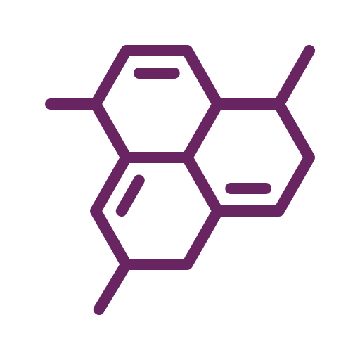
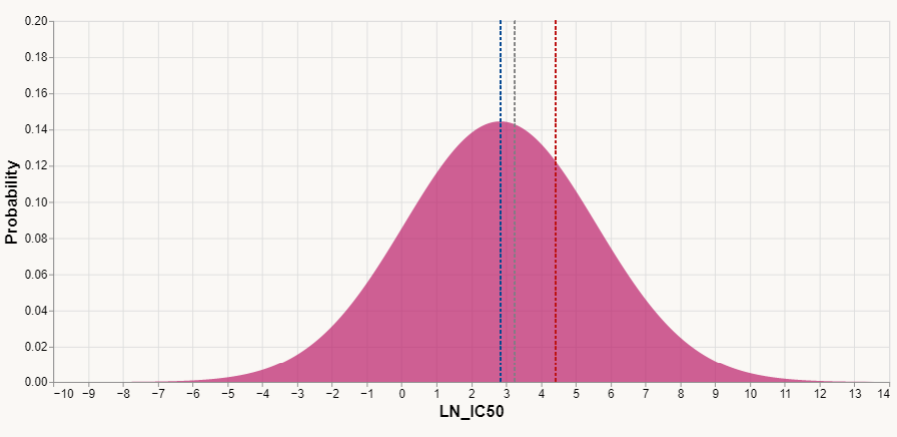
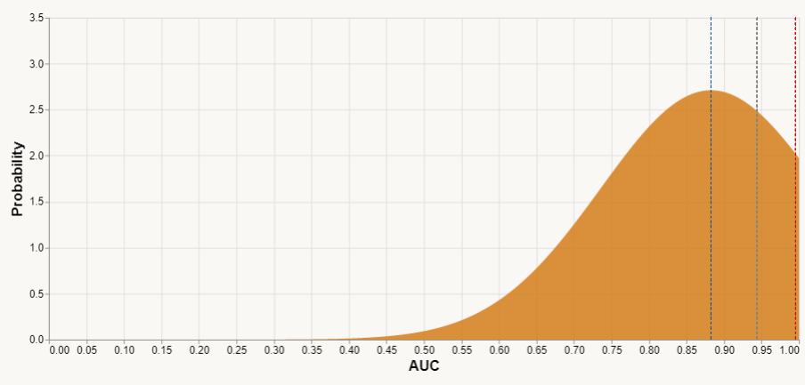

Predicting Drug Resistance in Cancer Cell Lines using Machine Learning Approaches
Visualisation by: MDS6
Cancer Cell Lines are cultivated from cancer tissues, serve as valuable tools in research, enabling the exploration of cancer biology and the assessment of anti-cancer drug effectiveness
Drug Resistance refers to the ability of cancer cells to withstand the effects of one or more anti-cancer drugs, leading to reduced treatment effectiveness.
Since we have not delved into the development of predictive model, this purpose of this visualisation is to present and communicate the outcomes of data analysis of the datasets that we have collected.
The two datasets that we have collected are the "GDSC2-dataset" that contains drug response of different cancer cell lines to different drugs and the "RMA normalised gene expression dataset" that contains gene expression levels of different cell lines.
Genomic of Drug Sensitivity in Cancer (GDSC) and RMA Gene Expressions Datasets Analysis

17418 Genes
741 Cancer Cell Lines
30+ Cancer Types
295 Drugs
LN_IC50 is the logarithm of IC50, representing sensitivity of drugs on cancer cell lines. The lower the LN_IC50, the higher the sensitivity.
AUC is area under curve of dose-response, representing resistance of drugs on cancer cell lines. The higher the AUC value, the higher the resistance.
Normal Distribution of LN_IC50
Normal Distribution of AUC


Mean = 2.83378 Median = 3.255135 Mode = 4.421774
Mean > Median > Mode
It shows a negative skewness, indicating on average, there are more drugs having higher LN_IC50 (lower sensitivity, higher resistance) on the cancer cell lines.
Mean = 0.882691 Median = 0.944315 Mode = 0.995496
Mean > Median > Mode
It shows a negative skewness, indicating on average, there are more drugs having higher AUC (higher resistance, lower sensitivity) on the cancer cell lines.
The result of both normal distribution graph aligns with our hypothesis such that:
The lower the LN_IC50, the higher the sensitivity, the lower the resistance, the lower the AUC The higher the AUC, the higher the resistance, the lower the sensitivity, the higher the LN_IC50
Cancer Cell Lines and Drugs Relationship Analysis
Due to large amount of drugs and cancer cell lines in GDSC dataset, we therefore choose 10 types of cell lines and 10 types of drugs from the GDSC dataset to illustrate and analyse their relationship.
LN_IC50 Corresponding to the 10 Types of Selected Drugs
Area Under Curve (AUC) Corresponding to the 10 Types of Selected Drugs
The donut chart above shows the LN_IC50 (sensitivity) of the 10 types of drugs on the 10 types of cancer cell lines.
From the visualisation, we can say that the drug "AZD7762" has an overall lower LN_IC50 on the 10 cancer cell lines, indicating higher sensitivity, therefore lower drug_resistance.
The bar chart above shows the AUC (resistance) of the 10 types of drugs on the 10 types of cancer cell lines.
From the visualisation, we can say that the drug "AZD7762" has an overall lower resistance on the 10 cancer cell lines, indicating better drug performance, which supports the result from donut chart.
Analysis of Correlation between AUC, LN_IC50, RMSE and Z_SCORE for the selected 10 Types of Drugs
By observing AUC and LN_IC50, in overall, smaller AUC maps to smaller value of LN_IC50, whereas smaller AUC maps to smaller value of LN_IC50
There is no obvious correlation between LN_IC50, RMSE and Z_SCORE. We can therefore conclude that RMSE and Z_SCORE will not be taken into account for the development of our drug resistance prediction model.
In overall, drugs with lower value of AUC has lower value of LN_IC50 (vice versa).
This indicates that drugs with lower resistance will have higher sensitivity.
Analysis of Relationship between LN_IC50 and AUC for the selected 10 Types of Drugs
From the scatterplot, it shows a POSITIVE relationship between LN_IC50 and AUC.
In overall, for each type of drugs, the smaller the value of LN_IC50, the smaller the value of AUC.
This again supports our hypothesis such that lower LN_IC50, higher sensitivity, lower resistance, therefore smaller value of AUC.